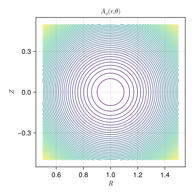

Axisymmetric Tokamak (Toroidal)
ElectromagneticFields.AxisymmetricTokamakToroidalEquilibrium — Type
Axisymmetric tokamak equilibrium in (r,θ,ϕ) coordinates with covariant components of the vector potential given by
\[A (r, \theta, \phi) = \frac{B_0 R_0}{2} \, \bigg( \frac{Z}{R} \cos (\theta) - \ln \bigg( \frac{R}{R_0} \bigg) \sin (\theta) , \, - r \, \bigg[ \frac{Z}{R} \sin (\theta) + \ln \bigg( \frac{R}{R_0} \bigg) \cos (\theta) \bigg] , \, + \frac{r^2}{q_0 R_0} \bigg)^T ,\]
resulting in the magnetic field with covariant components
\[B (r, \theta, \phi) = \frac{B_0}{q_0} \, \bigg( 0 , \, \frac{r^2}{R}, \, q_0 R_0 \bigg)^T ,\]
where $R = R_0 + r \cos \theta$ and $Z = r \sin \theta$.
Parameters:
R₀: position of magnetic axisB₀: B-field at magnetic axisq₀: safety factor at magnetic axis
AxisymmetricTokamakToroidalITER returns this equilibrium with ITER's parameters.
Constructing the Field
using CairoMakie
using ElectromagneticFields
equ = AxisymmetricTokamakToroidalEquilibrium()Axisymmetric Tokamak Equilibrium in Toroidal Coordinates with
R₀ = 1.0
B₀ = 1.0
q₀ = 2.0Plotting
The coordinates $(r, \theta, \phi)$ are the natural ones for this field — the flux surfaces are the surfaces of constant $r$. For the plot the poloidal plane is sampled in $(R,Z)$ and mapped to $(r,\theta)$ first, so the result is directly comparable with the cartesian and cylindrical versions of the same equilibrium:
plot_equilibrium(equ)
Evaluating the Field
field = FieldFunctions(AxisymmetricTokamakToroidalEquilibrium())The chart maps $(r, \theta, \phi)$ to the cartesian coordinates, and to_cartesian and from_cartesian move between the two:
t = 0.0
ξ = [0.5, π/4, 0.0]
x = to_cartesian(field, t, ξ)3-element StaticArraysCore.SVector{3, Float64} with indices SOneTo(3):
1.3535533905932737
0.0
0.35355339059327373roundtrip = from_cartesian(field, t, x) ≈ ξ
roundtriptrueBecause the toroidal chart is left-handed, the determinant of its Jacobian is minus the Jacobian determinant J:
using LinearAlgebra
signed = det(DF(field, t, ξ)) ≈ orientation(field) * J(field, t, ξ)
orientation(field), signed(-1, true)The Regularized Gauge
ElectromagneticFields.AxisymmetricTokamakToroidalRegularizationEquilibrium — Type
Axisymmetric tokamak equilibrium in (r,θ,ϕ) coordinates with covariant components of the vector potential given by
\[A (r, \theta, \phi) = B_0 \, \bigg( 0 , \, \bigg( \frac{R_0}{\cos (\theta)} \bigg)^2 \, \ln \bigg( \frac{R}{R_0} \bigg) - \frac{r R_0}{\cos (\theta)} , \, + \frac{r^2}{2 q_0} \bigg)^T ,\]
resulting in the magnetic field with covariant components
\[B (r, \theta, \phi) = \frac{B_0}{q_0} \, \bigg( 0 , \, \frac{r^2}{R}, \, q_0 R_0 \bigg)^T ,\]
where $R = R_0 + r \cos \theta$.
This is the same magnetic field as AxisymmetricTokamakToroidalEquilibrium, in a gauge whose poloidal vector potential is regular on the magnetic axis.
Parameters:
R₀: position of magnetic axisB₀: B-field at magnetic axisq₀: safety factor at magnetic axis
The vector potential is fixed only up to a gauge, and the two gauges are genuinely different equilibria here, because the generated code follows whatever was written down. The poloidal vector potential of the chart above is singular on the magnetic axis; this variant carries the same magnetic field in a gauge that is regular there.
regular = FieldFunctions(AxisymmetricTokamakToroidalRegularizationEquilibrium())
same_field = B♭(regular, t, ξ) ≈ B♭(field, t, ξ)
same_fieldtrueThe vector potentials differ, as they must:
[A♭(field, t, ξ) A♭(regular, t, ξ)]3×2 StaticArraysCore.SMatrix{3, 2, Float64, 6} with indices SOneTo(3)×SOneTo(2):
-0.0146829 0.0
-0.0996909 -0.10164
0.0625 0.0625